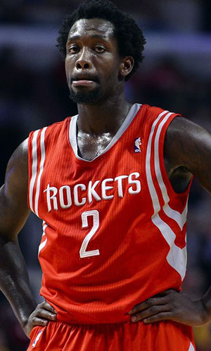

|  |
Матчи |
56 |
|
Передачи (всего/среднее) |
191 |
3.4 |
| В основе |
55 |
|
Подборы в защите (всего/среднее) |
169 |
3 |
| Время (всего/среднее) |
1732:17 |
30:56 |
Подборы в атаке (всего/среднее) |
67 |
1.2 |
| Очки (всего/среднее) |
568 |
10.1 |
Подборы (всего/среднее) |
236 |
4.2 |
| 2-очковые броски (всего/среднее) |
89/209 |
1.6/3.7 |
Перехваты (всего/среднее) |
59 |
1.1 |
| 2-очковые броски (% реализации) |
42.6% |
|
Потери (всего/среднее) |
83 |
1.5 |
| 3-очковые броски (всего/среднее) |
115/323 |
2.1/5.8 |
Блокшоты (всего/среднее) |
23 |
0.4 |
| 3-очковые броски (% реализации) |
35.6% |
|
Блокшоты соперника (всего/среднее) |
35 |
0.6 |
| Штрафные броски (всего/среднее) |
45/60 |
0.8/1.1 |
Фолы (всего/среднее) |
182 |
3.3 |
| Патрик Беверли |
Штрафные броски (% реализации) |
75% |
|
Коэффициент полезности (всего/среднее) |
434 |
7.8 |